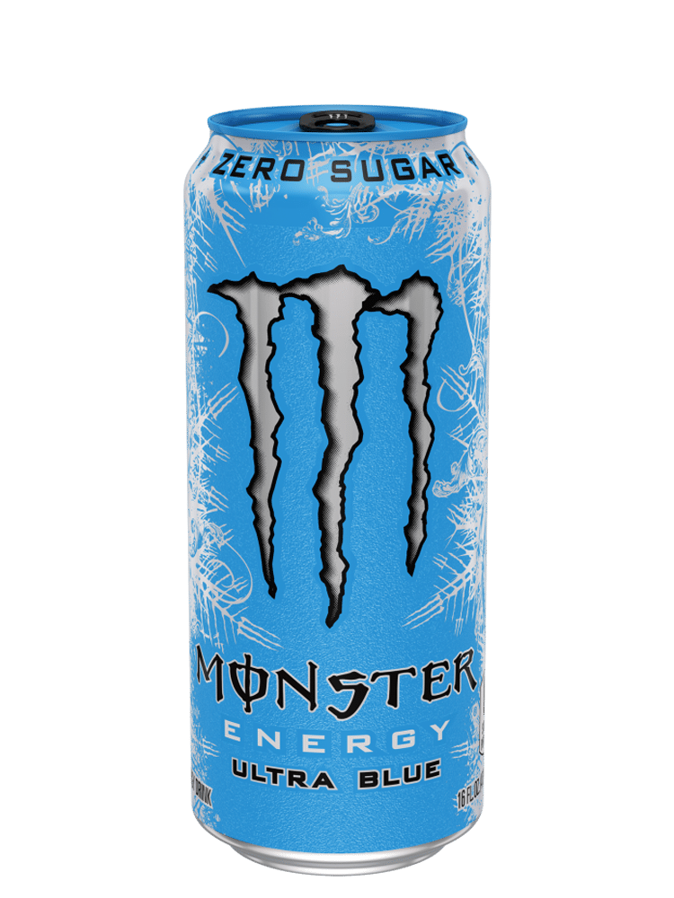
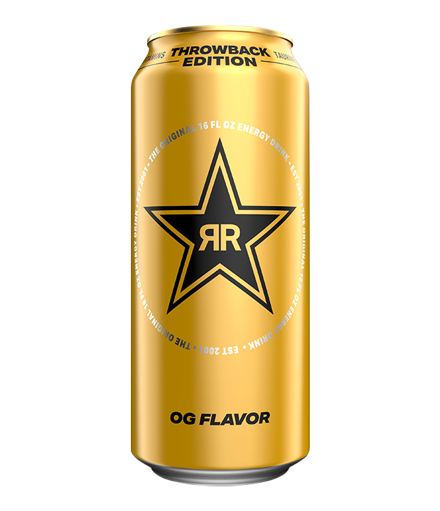

Agony
Energy
About
Agony Energy is a new, and stylish energy drink fit to aid to the fit. Filled with caffiene, citruline, and beta-alanine, your energy nor pumps will ever go unnoticed. While this may be enough for another energy drink to suffice, Agony takes it to the next level by also including your daily 5g of creatine. Now do yourself a favor and stop holding yourself back, drink Agony.
Explore Now

